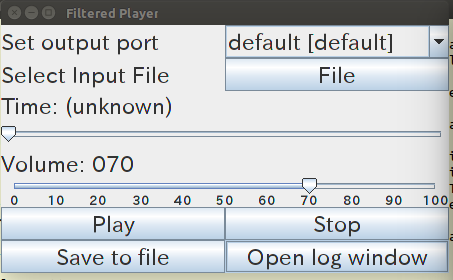
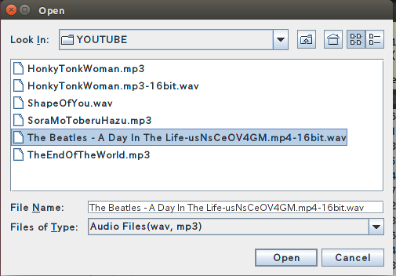
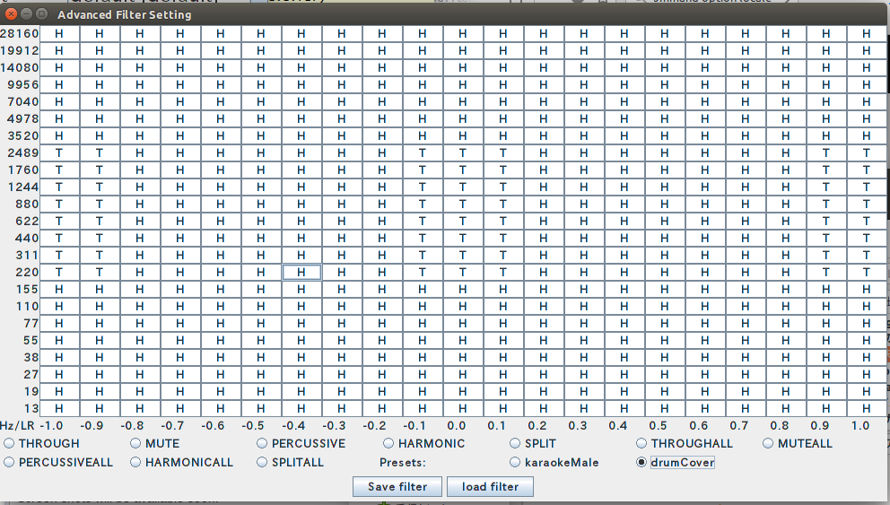
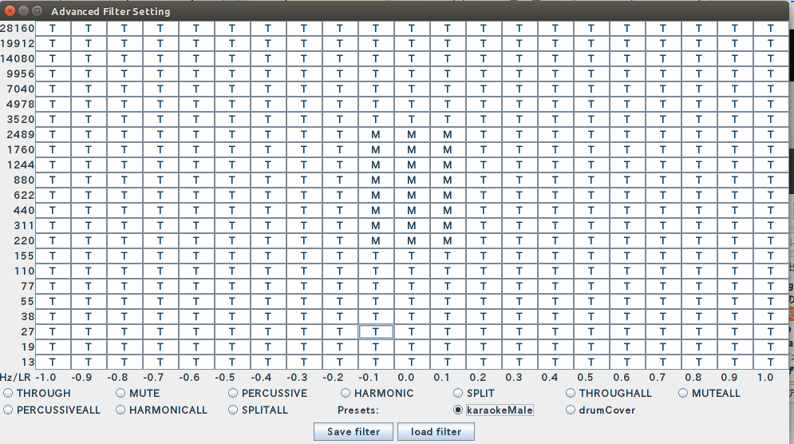

Operating System: Windows, macOS, Linux etc.
Software requirement: Java Runtime Environment (available at http://java.com/)
Start the Application:
A) Double click FilteredPlayerApp.jar icon in the file browser or Desktop
B) On the terminal
java -jar FilteredPlayerApp.jar
0) Set output port for playback (default is OK)

1) Select an input file (wav or mp3)
If the characters are distorted, try full size by clicking the square icon.

2) Play and listen
You can modify the filter while listening.
Rewind or fast forward: "Pause" or "Stop", then use the "Time" slider.
Even if playback quality is bad. You can still use "Save as file"
without problem.
3) Set filter (T: Through, M: Mute, H: Harmonic, P: Percussive)
Preset1:

Preset2:

Note: You may save/load your custom filter.
Modification:
If you want more vocal, press "THROUGH" and add T higher freq and/or
wider pan ranges around the center.
If you want more bass guiter, add "T" at lower freq around the center.
If you want more right guitar, add "T" at lower/higher freq
around the right most pan ranges.
4) Save as file
Volume slider affects the volume of the save file.